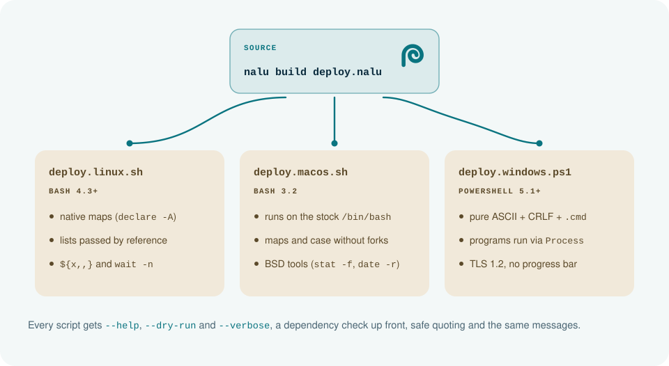

Nalu is Hawaiian for the wave that reaches the shore. The language takes one source to every shell; the mark is one stroke that reaches three meanings. Everything on this page is generated by docs/brand/build.py from one set of shapes and tokens.
A single filled path on a 64-unit grid. Read it as a letter, as water or as a shell, and it is still the same mark.
Stem and arch of a lowercase n: the first letter of the name and the shape that opens the wordmark.
The crest pitches forward and curls into its own barrel: nalu, the wave that arrives.
Turn after shrinking turn, a spiral shell: the thing every script runs in.
Geometric lowercase drawn for the brand, not set in a font: every letter comes from one ring (radius 15, stroke 6.5), x-height 30, ascender 44. The u is the n turned over: crest and trough. In the lockup the wordmark sits on the mark's foot at 82% of its height, two strokes away. Write Nalu in running text; nalu only for the command and code.
A Hawaiian shoreline at noon: cool whites instead of sand, deep ocean ink, and one signature color, the lagoon. Every lively color has exactly one job: reef and lagoon are you acting, lehua is something that failed (or that you chose to recover), limu is what worked, ʻōlena warns.
#0b2b3dink on light, the deep surfaces on dark#07161fthe dark background and the terminal#e6f3f1ink on dark#f3f8f8light surfaces#0a7480the mark and actions on light#36d1c4the mark and actions on dark; the signature color#c42c46failure and recovery on light#ff8094failure and recovery on dark#1d7a4csuccess on light#74d7a0success on dark#8f5600warnings on light#f5be5bwarnings on dark#f1e9dathe shore, where generated scripts land (illustrations only)| Role | Light | Dark | Job |
|---|---|---|---|
| bg | #ffffff | #07161f | |
| surface | #f3f8f8 | #0c202b | |
| surface-2 | #e9f2f2 | #11293a | |
| code-bg | #eef5f5 | #0a1c26 | |
| ink | #0b2b3d | #e6f3f1 | |
| ink-soft | #4a6573 | #93acb4 | |
| rule | #d6e4e6 | #1d3746 | |
| action | #0a7480 | #36d1c4 | what you write and what you do: keywords, links, actions, {x}, $ |
| fail | #c42c46 | #ff8094 | failure and recovery: catch, fail, ignore, try, errors |
| ok | #1d7a4c | #74d7a0 | it worked: passing tests, strings in code |
| warn | #8f5600 | #f5be5b | warnings |
| mark | #0a7480 | #36d1c4 | the mark (always one color) |
| shore | #f1e9da | #1f2a26 | where generated scripts land, in diagrams |
| shore-ink | #5c4a2a | #e3d3b3 |
| Theme | Pair | Ratio | WCAG |
|---|---|---|---|
| light | ink / bg | 14.71:1 | ✓ ≥ 4.5 |
| light | ink-soft / bg | 6.18:1 | ✓ ≥ 4.5 |
| light | action / bg | 5.49:1 | ✓ ≥ 4.5 |
| light | fail / bg | 5.53:1 | ✓ ≥ 4.5 |
| light | ok / bg | 5.33:1 | ✓ ≥ 4.5 |
| light | warn / bg | 6.00:1 | ✓ ≥ 4.5 |
| light | ink / surface | 13.73:1 | ✓ ≥ 4.5 |
| light | ink-soft / surface | 5.76:1 | ✓ ≥ 4.5 |
| light | action / surface | 5.13:1 | ✓ ≥ 4.5 |
| light | fail / surface | 5.16:1 | ✓ ≥ 4.5 |
| light | ok / surface | 4.97:1 | ✓ ≥ 4.5 |
| light | warn / surface | 5.60:1 | ✓ ≥ 4.5 |
| light | ink / surface-2 | 12.93:1 | ✓ ≥ 4.5 |
| light | ink-soft / surface-2 | 5.43:1 | ✓ ≥ 4.5 |
| light | action / surface-2 | 4.83:1 | ✓ ≥ 4.5 |
| light | fail / surface-2 | 4.86:1 | ✓ ≥ 4.5 |
| light | ok / surface-2 | 4.68:1 | ✓ ≥ 4.5 |
| light | warn / surface-2 | 5.27:1 | ✓ ≥ 4.5 |
| light | ink / code-bg | 13.32:1 | ✓ ≥ 4.5 |
| light | ink-soft / code-bg | 5.59:1 | ✓ ≥ 4.5 |
| light | action / code-bg | 4.97:1 | ✓ ≥ 4.5 |
| light | fail / code-bg | 5.01:1 | ✓ ≥ 4.5 |
| light | ok / code-bg | 4.83:1 | ✓ ≥ 4.5 |
| light | warn / code-bg | 5.43:1 | ✓ ≥ 4.5 |
| light | mark / bg | 5.49:1 | ✓ ≥ 3 |
| light | shore-ink / shore | 7.05:1 | ✓ ≥ 4.5 |
| dark | ink / bg | 16.14:1 | ✓ ≥ 4.5 |
| dark | ink-soft / bg | 7.70:1 | ✓ ≥ 4.5 |
| dark | action / bg | 9.68:1 | ✓ ≥ 4.5 |
| dark | fail / bg | 7.67:1 | ✓ ≥ 4.5 |
| dark | ok / bg | 10.47:1 | ✓ ≥ 4.5 |
| dark | warn / bg | 10.84:1 | ✓ ≥ 4.5 |
| dark | ink / surface | 14.68:1 | ✓ ≥ 4.5 |
| dark | ink-soft / surface | 7.00:1 | ✓ ≥ 4.5 |
| dark | action / surface | 8.81:1 | ✓ ≥ 4.5 |
| dark | fail / surface | 6.97:1 | ✓ ≥ 4.5 |
| dark | ok / surface | 9.52:1 | ✓ ≥ 4.5 |
| dark | warn / surface | 9.86:1 | ✓ ≥ 4.5 |
| dark | ink / surface-2 | 13.16:1 | ✓ ≥ 4.5 |
| dark | ink-soft / surface-2 | 6.28:1 | ✓ ≥ 4.5 |
| dark | action / surface-2 | 7.90:1 | ✓ ≥ 4.5 |
| dark | fail / surface-2 | 6.25:1 | ✓ ≥ 4.5 |
| dark | ok / surface-2 | 8.54:1 | ✓ ≥ 4.5 |
| dark | warn / surface-2 | 8.84:1 | ✓ ≥ 4.5 |
| dark | ink / code-bg | 15.29:1 | ✓ ≥ 4.5 |
| dark | ink-soft / code-bg | 7.29:1 | ✓ ≥ 4.5 |
| dark | action / code-bg | 9.17:1 | ✓ ≥ 4.5 |
| dark | fail / code-bg | 7.26:1 | ✓ ≥ 4.5 |
| dark | ok / code-bg | 9.92:1 | ✓ ≥ 4.5 |
| dark | warn / code-bg | 10.27:1 | ✓ ≥ 4.5 |
| dark | mark / bg | 9.68:1 | ✓ ≥ 3 |
| dark | shore-ink / shore | 10.04:1 | ✓ ≥ 4.5 |
| terminal | fg / bg | 15.45:1 | ✓ ≥ 4.5 |
| terminal | dim / bg | 6.28:1 | ✓ ≥ 4.5 |
| terminal | bold / bg | 18.00:1 | ✓ ≥ 4.5 |
| terminal | error / bg | 7.97:1 | ✓ ≥ 4.5 |
| terminal | warn / bg | 11.27:1 | ✓ ≥ 4.5 |
| terminal | help / bg | 10.07:1 | ✓ ≥ 4.5 |
| terminal | ok / bg | 10.88:1 | ✓ ≥ 4.5 |
Nalu is a language, so code is the product. Recursive spans proportional and monospaced in one superfamily: the brand, the prose and the code share letterforms. Its Casual axis gives the display a brushed warmth; the mono stays strictly linear.
let tag = $(git describe --tags) catch "v0.0.0"Scale (px): xs 12 · sm 14 · md 16 · lg 19 · xl 23 · 2xl 28 · 3xl 36 · 4xl 48 · 5xl 68. Fallbacks: system UI sans and mono, which is also what the README diagrams use (GitHub shows SVGs without web fonts).
fn wait_healthy(url: str) { retry(10, every: 5s) { let code = http.status(url, timeout: 5s) if code != 200 { fail "{url} answered {code}" } } log.info("{url} is up") }
// Fail loud by default; `catch` decides. let user = env.get("USER") catch "unknown" let tmp = fs.temp_dir() catch fail "no temp dir" $ open {report} catch ignore $ git pull catch { log.warn("offline: {err}") }
| Role | Color · style | Covers |
|---|---|---|
| keyword | action · normal | let var fn return struct enum param if else for in while match break continue defer parallel retry native test self true false |
| fail | fail · bold | catch fail ignore try |
| string | ok · normal | "…" and '…' |
| interp | action · normal | the braces of {x}, in strings and commands |
| command | action · bold | the $ of $ cmd and $( ) |
| program | ink · bold | the program name after $ |
| comment | ink-soft · italic | // and /// |
| type | ink-soft · normal | str int bool path duration secret and capitalized names |
| plain | ink · normal | the rest: names, numbers, operators |
Terminal palette (always dark): fg dim bold error warn help ok — respects NO_COLOR; color never carries meaning alone.
Diagrams are calm cards on the page background. Flow is drawn as a swell: a soft wave from source to destination, ending in a foam dot. Destinations that are generated scripts sit on the shore (sand). Labels are uppercase mono eyebrows; names are body text; code is mono.
docs/art/build.py.
| File | Use |
|---|---|
logo/nalu-lockup.svg | Lockup, light backgrounds: the default for headers and READMEs |
logo/nalu-lockup-inverse.svg | Lockup, dark backgrounds |
logo/nalu-lockup-mono.svg | Lockup, one color (currentColor) |
logo/nalu-mark.svg | Mark, light backgrounds |
logo/nalu-mark-inverse.svg | Mark, dark backgrounds |
logo/nalu-mark-mono.svg | Mark, one color: stamps, editor icons, colored backgrounds |
logo/nalu-wordmark.svg | Wordmark alone, when the mark is already nearby |
logo/nalu-app-icon.svg | App icon, 512 × 512: installers, Homebrew, winget, avatars |
logo/nalu-favicon.svg | Favicon: follows the system theme |
tokens/tokens.css | CSS variables: light and dark roles, syntax, terminal, type, space, radius |
tokens/tokens.json | The same tokens in W3C Design Tokens format, plus the ANSI map of the terminal |
docs/art/ | README banner, social card, badges and diagrams (light/dark, en/pt) |